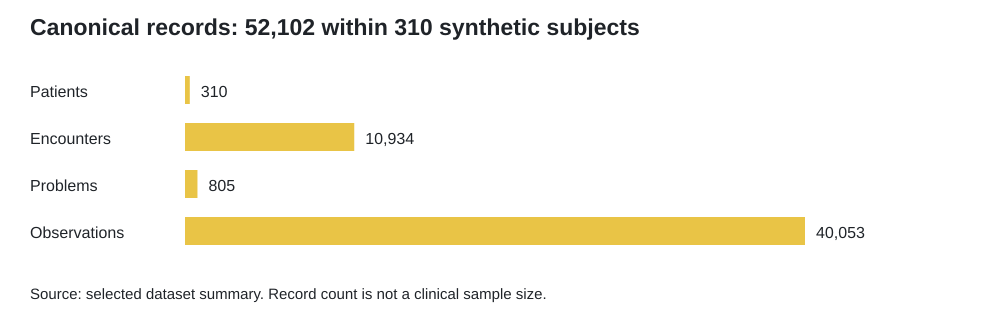
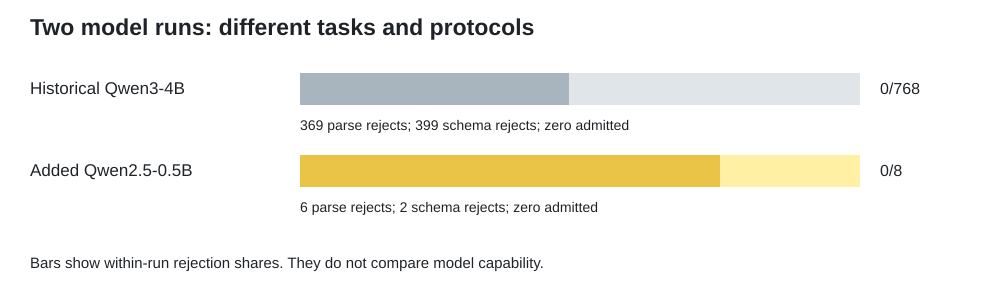
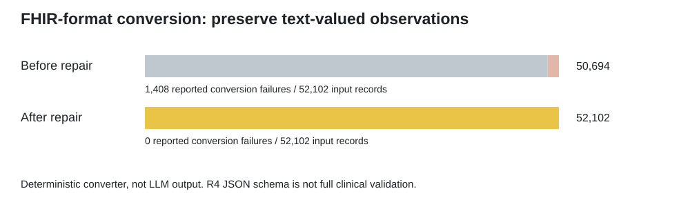
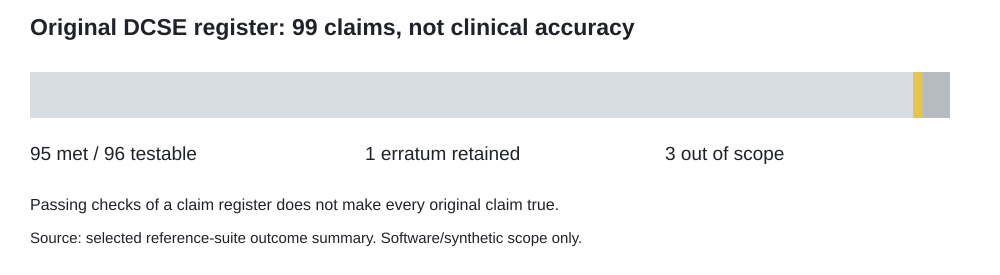

GBI-DCSE-Assessment_v0
Programmatic Verification of Legacy-EHR Transformations
A focused research update to GBI BoundaryBench. This edition retains the original research question, task families and headline v0.1 result, then adds the reported GBI/DCSE reference checks, dataset review, new model execution and FHIR-format repair.
Yellow identifies material added or revised in this edition. It does not mean that the result is positive, statistically significant or clinically approved. For the highlighted narrative, open the review page.
Private review candidate. This edition is an evidence summary, not a full implementation release. No public-release or clinical approval is recorded here.
GBI BoundaryBench is a research benchmark for testing the boundary between a plausible model proposal and an enterprise-admissible action. Its thesis remains: a model output is evidence, not authority.
MODEL PROPOSAL
-> PROGRAMMATIC VERIFICATION
-> ADMISSIBLE ACTION / QUARANTINE / REVIEW / REJECTION
The benchmark uses synthetic legacy-EHR-style records and explicit identity, provenance, terminology/version, temporal, evidence and policy requirements. This is not a clinical system, medical device, certified terminology crosswalk, or autonomous EHR write-back service. Generator references are not clinical truth.
Headline empirical result
Preserved v0.1 baseline. Qwen/Qwen3-4B-Instruct-2507 completed 256 held-out
synthetic tasks in three evidence modes: output_only, token_top_k and
full_category_evidence. All 768 executions completed, but zero structured result
records satisfied the benchmark contract.
| Metric | Frozen v0.1 result |
|---|---|
| Canonical executions | 768 |
| Accepted structured result records | 0 |
| Runner parse rejections | 369 |
| Runner schema rejections | 399 |
| Verified completions | 0 |
| Coverage | 0% |
| Selective risk | Undefined at zero coverage |
Zero coverage is not evidence of useful selectivity or low clinical risk. Runner
and downstream-verifier rejection histograms concern different stages and must
not be added. The six original aggregate files remain unchanged in
artifacts/empirical/scored_v0_1.
Assessment updates
| Update | Reported result | Interpretation |
|---|---|---|
| U01 - Dataset context | 310 synthetic subjects; 52,102 canonical records; all state fields Massachusetts | Integrity checks do not establish an IHS-representative cohort. |
| U02 - Both reference halves | BeTaL v0.2: 319 checks; GBI v2: 72; DCSE v3: 148; all reported passed | Reference execution, not new model or patient trials. |
| U03 - Original claim register | 99 claims: 95 met, 1 erratum, 3 out of scope | The erratum and unsupported claims remain visible. |
| U04 - Additional open model | Qwen2.5-0.5B-Instruct: 8 completed, 0 format-admitted, 0 correct | Inference works; this tested output workflow does not. |
| U05 - FHIR conversion | 1,408 conversion failures before repair; 0 afterward across 52,102 records | Deterministic R4 JSON-schema representation, not LLM or clinical performance. |
| U06 - Next evidence | Full FHIR/IHS conformance, policy authority and clinical validity remain unevaluated | The next evaluation is specified, not assumed complete. |
These are reported results from the supplied assessment records. Preparing this edition did not rerun the models or reference suites. Newly executed checks in this package concern only its file inventory and outcome arithmetic.
Read what changed, the full results narrative and the evidence limits.
Why this benchmark exists
Legacy EHR transformation is not just a text-generation problem. A proposed patient match, terminology mapping, FHIR resource or temporal classification has to meet explicit operational requirements. Malformed output, unsupported answers and correct abstention are different outcomes. An evaluation should preserve those distinctions rather than report every refusal as evidence of success.
The new evidence separates three questions: can the software execute; can it produce an admissible representation; and is the result appropriate for the intended institution and patients? Progress on one does not settle the others.
What BoundaryBench evaluates
| Family | Required behavior |
|---|---|
patient_identity_normalization |
Normalize identity only with supporting evidence. |
orphan_duplicate_detection |
Identify missing or duplicate patient references. |
field_anomaly_bleed |
Detect contamination of structured fields. |
code_system_version_validation |
Distinguish supported, legacy and unsupported versions. |
rpms_to_fhir_mapping |
Map record shape with resource type and provenance. |
temporal_status_classification |
Separate active from historical evidence. |
evidence_sufficiency |
Abstain when required evidence is absent. |
policy_action_selection |
Apply the specified admit, quarantine, review or reject rules. |
Allowed benchmark actions remain ADMIT, ADMIT_HISTORICAL_ONLY,
QUARANTINE_SLICE, ABSTAIN, EXPERT_REVIEW and REJECT.
Verification architecture
The original benchmark distinguishes model execution from deterministic grading. v0.1 uses generator references for scoring. Later reference evaluations concern witness-based policy behavior under synthetic conditions. Neither is represented here as an approved institutional or clinical policy authority.
This edition documents outcome-level scope only. It does not distribute the full verification implementation, operational interfaces or raw model archives. Review boundaries are part of the result.
Frozen evaluation protocol
The historical v0.1 evaluation and the later assessment must not be combined into one model score. The v0.1 input/output data were frozen before trusted scoring. The interrupted token-top-k run is not counted as an additional scored run. The three evidence modes reuse tasks: 768 executions are not 768 independent clinical cases.
The new Qwen2.5-0.5B run used eight original public-development fixtures, one per family. The larger dataset review describes a separate packaged 64-task development split and a 256-task held-out split. Eight is not a sample drawn from the 64 by this publication. The cohorts, models and purposes remain distinct.
Reproduce or inspect
Use Python 3.10 or newer for this report-only checker; no model account is needed:
python scripts/verify_review.py
python -m unittest discover -s tests -v
These commands check the included file inventory, hashes and agreement among
selected outcome summaries. They do not rerun inference, reconstruct withheld
source data, execute full FHIR validation or confer permission to publish.
Open index.html locally for yellow-highlighted changes and static figures.
Limitations and next experiments
The canonical input is a separately identified Synthea alternative; the exact previous Pine Ridge source was unavailable. All 310 synthetic state fields are Massachusetts. One synthetic subject has an American Indian or Alaska Native race label; that fact alone neither demonstrates bias nor establishes transportability. The selection takes the first 310 sorted source bundles, not a random IHS sample.
The revised converter preserves text observations with valueString. Its reported
R4 JSON-schema success is not full resource-invariant, terminology, US Core,
endpoint, policy or clinical validation. It is not 52,102 successful model outputs.
The new small-model run had no valid task completions. More models, a revised output protocol and independently selected complete tasks are needed. Clinical and intended-user conclusions require their own approved study and reference adjudication. No IHS endorsement is implied.
Licensing boundary
The existing LICENSE, DATA_LICENSE.md, DOCUMENTATION_LICENSE.md, NOTICE
and THIRD_PARTY_NOTICES.md are preserved. New report-checking software follows
the software notice; new prose and figures follow the documentation notice.
The original notices may name paths absent from this smaller distribution.
No change to those notices revokes existing grants or licenses excluded material.
See the publication scope before any distribution.
Figures: denominators and limits remain visible



